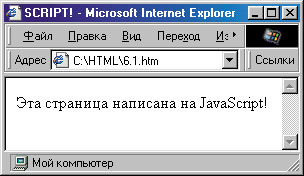
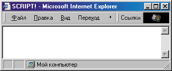
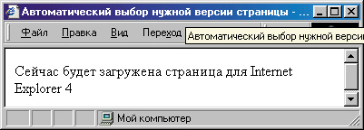
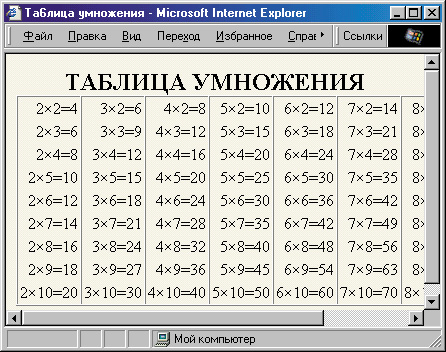

|
|
|
6. Динамические веб-страницы на основе JavaScript
6.1. Простейшие примеры
До сих пор мы рассматривали оформление статических веб-страниц, то есть таких, которые, будучи загружены, уже внешне не изменяются. Однако в последнее время все большее распространение получают так называемые динамические веб-страницы. Они могут изменять свой внеш- ший вид в зависимости от действий пользователя или даже сами по себе. Кроме того, на них могут присутствовать динамические элементы.
Какими же способами пишутся такие веб-страницы? Ясно, что с помощью обычных тегов особой динамики достичь нельзя. Существуют, конечно, теги <MARQUEE> (“бегущая строка”, поддерживается только в Internet (Explorer) и <BLINK> (мигающий текст, поддерживается только в Netscape). Существует определенное в стандарте CSS2 стилевое свойство text-decoration: blink; (мигающий текст) и псевдокласс A:hover (изменение вида якоря/гипер- ссылки при наведении на них указателя мыши). Но это, конечно, еще не динамика.
Запись информации в веб-документ
Для написания динамических веб-страниц используются фрагменты кода, написанные на языке JavaScript (или другом языке сценариев, о чем речь пойдет ниже), который имеет синтаксис, отличный от HTML. Для отде ления этих фрагментов от остальной части HTML-документа они распоагаются между тегами <SCRIPT> и </SCRIPT> . Например, так:
<!DOCTYPE HTML PUBLIC "-//W3C//DTD HTML 4.0 Transitional//EN">
<HTML>
<HEAD>
<TITLE>SCRIPT!</TITLE>
</HEAD>
<BODY>
<SCRIPT>
document.write("Эта страница написана на JavaScript!");
</SCRIPT>
</BODY>
</HTML>
Результат работы этого кода показан на рис. 6.1. Как видите, пока ничего необычного. Эту же надпись можно было написать и просто так, не используя JavaScript — результат был бы тот же. Зато теперь мы знаем, что если написать метод document.write, то на страницу будет вставлено то, что далее стоит в скобках. Если это текстовая строка, то нужно ее заключить еще и в кавычки.

Рис. 6.1. Простейшее использование JavaScript
Ладно, давайте немного изменим текст кода (для экономии места мы приводим только текст сценария, предполагая, что все остальные теги остаются такими же, как в предыдущем примере):
<SCRIPT> window.status = "Эта страница написана на JavaScript!"; </SCRIPT>
Результат можно увидеть на рис. 6.2. Теперь окно броузера абсолютно пустое! Но это и правильно, ведь мы же не вводили никакого текста. Зато если вы посмотрите на строку состояния, то увидите там нашу надпись. В этой строке всегда появляется значение, присвоенное объекту window.status. Знак равенства в JavaScript означает “присвоить значение”.

Рис. 6.2. Изменение строки состояния
Хорошо, скажете вы, вот мы уже управляем строкой состояния, но где же обещанная динамика? Ну, если не терпится, то можно еще немного изменить код предыдущего примера:
<SCRIPT> window.status = "Эта страница написана на JavaScript!"; setTimeout("window.status = 'А вы как думали?'",2000); </SCRIPT>
Теперь в момент загрузки наша страница будет выглядеть так же, как и в предыдущем примере, однако через две секунды содержимое строки состояния изменится на фразу “А вы как думали?”. Дело в том, что функция setTimeoutO, которую мы здесь использовали, совершает действие, определенное внутри нее, с некоторой задержкой. Эта задержка исчисляется в миллисекундах (тысячных долях секунды). Соответственно, значение 2000 соответствует задержке в 2 секунды.
Само действие определяется в виде строки, то есть должно быть заключено в кавычки. Поэтому фразу “А вы как думали?” пришлось заключить в другой тип кавычек — так называемые одинарные, чтобы броузер не “запутался”. В JavaScript (как и в HTML) допускается использование и тех, и других кавычек, нужно только внимательно следить, чтобы все кавычки в нужном месте закрывались. Нельзя было написать так:
. setTimeout("window.status = "А вы как думали?"", 2000);
поскольку тогда броузер “решил бы”, что строка закончилась после знака равенства, а далее, не встретив запятой, пожаловался бы на ошибку. Кстати, необходимо внимательно следить, чтобы в JavaScript-фрагментах не было ошибок. Вы помните, что если броузер встречает ошибку синтаксиса HTML (например, непонятный ему тег), то он его просто игнорирует. Но если броузер встретит ошибку в коде JavaScript, то будет выдано сообщение об ошибке, причем весь сценарий не будет исполнен.
Еще одна деталь: в JavaScript необходимо соблюдать регистр символов, так как в этом языке различаются прописные и строчные буквы. Напри мер, если вместо setTimeoutO написать SetTimeoutO или settimeoutQ, то будет выдано сообщение об ошибке.
Интерпретация языка JavaScript
Прежде чем рассмотреть какой-нибудь осмысленный пример, необходимо отметить еще несколько моментов. Во-первых, броузеры могут интерпре- тировать фрагменты JavaScript по-разному, но об этом речь пойдет ниже. Во-вторых, надо предусмотреть вариант, когда броузер вообще “не пони- мает” сценариев (сценариями называют фрагменты, написанные на языке JavaScript и других подобных интерпретируемых языках). В этом случае он, скорее всего, пропустит текст, заключенный между тегами <SCRIPT> и </SCRIPT> . Но тогда пользователь этого броузера ничего не увидит на экране. Чтобы таких неприятностей не происходило, придумайте альтернативный HTML-текст, который бы отображался в броузерах, не поддерживающих сценарии. Его нужно заключить между тегами <NOSCRIPT> и </NOSCRIPT> . Если же придумать такой текст совершенно невозможно, напишите между этими тегами хотя бы то, что для просмотра этой страницы необходим броузер, поддерживающий JavaScript, и поставьте на него гиперссылку.
Но это еще не все. Представьте себе, что броузер пользователя уж очень старый и вообще не понимает тег <SCRIPT> . Что будет тогда? Как и поло жено, он этот тег проигнорирует, и тогда весь код сценария отобразится на экране, а это совсем некрасиво. Чтобы этого избежать, принято заключать код сценария в теги комментариев <!-- и -->. Однако некоторые интерпретаторы JavaScript, встроенные в броузеры, при этом пытаются обработать второй из этих тегов. Поэтому перед ним обычно ставят сим вол JavaScript-комментария //. Таким образом, получается приблизительно следующее:
<SCRIPT>
window.status = "Эта страница написана на Javascript!"; setTimeout("window.status " 'А вы как думали?'", 2000); //--> </SCRIPT>
Учет версии броузера
Теперь давайте рассмотрим простой пример. Предположим, что у нас уже имеются страницы, созданные специально для броузера Internet Explorer 4, Netscape 4 или Netscape 6. Мы хотим написать код, который бы определял тип броузера пользователя и, в зависимости от этого, загружала бы одну из наших страниц. Кроме того, он должен выдавать предупреждение, если обнаружит устаревший броузер (версии 3 и ниже).
Сначала давайте напишем такое предупреждение. Чтобы пользователь наверняка обратил на него внимание, можно использовать метод alert. Применяется он точно так же, как уже знакомый нам метод document.write, но при этом выводит текст не прямо на страницу, а в диалоговое окно. Пока пользователь не нажмет кнопку ОК, работа сценария не будет продолжена.
Как определить номер версии броузера? Для этого существует свойство navigator.appVersion. Однако его значением является не число (собственно номер версии), а целая строка. Например, если написать:
document.write(navigator.appVersion) ; то в броузере Internet Explorer 5 будет выдано такое сообщение:
4.0 (compatible; MSIE 5.0; Windows 98; DigExt)
Netscape и другие броузеры также выдают подобную длинную строку. Как же выделить из нее номер версии?
К счастью, первая цифра этой строки во всех броузерах указывает именно на номер версии (в Internet Explorer 5 на этом месте оставили цифру 4, чтобы подчеркнуть сходство этих версий.) Поскольку после этого номера стоит точка, то есть не цифра, его легко выделить из всей строки с помощью функции parselnt(). Она всегда выделяет целое число из строки, останавливаясь на первой не цифре.
В данном случае нам надо, если номер версии меньше 4, выдать предупреждающее диалоговое окно. Для проверки условия в JavaScript существует оператор if, после которого в скобках следует поставить условие. Поэтому мы можем написать так:
if (parseint(navigator.appVersion)<4)
alert("Вы используете старую версию броузера.\nВ ней страница может отображаться неправильно") ;
При этом метод alert будет выполнен только тогда, когда условие номер версии меньше 4 выполняется, а иначе он будет просто пропущен.
Вы, наверное, обратили внимание на странное сочетание \n. Оно используется в JavaScript в качестве специального символа, перевода строки. Вообще, в строках JavaScript символ обратной косой черты вместе со следующим за ним символом всегда означает специальный символ. В данном случае второе предложение в нашем диалоговом окне начнется с новой строки.
Хорошо, предупреждение мы написали, теперь нужно определить тип броузера. Для этого существует свойство navigator.appName. В Internet Explorer его значением является “Microsoft Internet Explorer”, а в броузерах компании Netscape — просто “Netscape”. Поскольку для каждого случая нам надо предусмотреть ряд действий, удобно использовать оператор switch (пере ключатель). Схематично его использование можно изобразить так:
switch (условие) { case "первый случай":
какие-то действия case "второй случай": какие-то действия
и т. д. default: действия во всех остальных случаях
В нашем примере условием является значение navigator.appName, а случаи могут быть такими: "Microsoft Internet Explorer" и "Netscape".
switch (navigator.appName) { case "Microsoft Internet Explorer": какие-то действия
case "Netscape": какие-то действия
действия во всех остальных случаях
Обратите внимание на то, что весь блок кода, идущий после условия, дол-жен быть заключен в фигурные скобки. Кстати, эти фигурные скобки играют большую роль в JavaScript. Например, в них всегда можно заключить некоторую последовательность действий, чтобы она интерпретировалась как одно целое (об этом мы еще поговорим ниже).
Чтобы загрузить другую веб-страницу вместо данной, нужно присвоить новое значение свойству window.location.href. Например, если написать:
window.location.href = "msie4.html";
то текущая страница будет заменена в окне броузера на страницу msie4.html. Давайте перед загрузкой новой страницы создадим соответствующее сообщение:
document-write ("Сейчас будет загружена страница для Internet Explorer 4") ;
setTimeout("window.local ion.href = 'msie4.html'", 3000);
При этом нам пришлось использовать функцию setTimeout, чтобы пользователь успел увидеть нашу надпись.
Поскольку на этом действия, предусмотренные для данного случая, закан- чиваются, нужно выйти из блока switch с помощью оператора break. После этого можно приступать к обработке других случаев.
Если тип броузера определился как Netscape, нам нужно опять смотреть его версию. Мы можем использовать для этого оператор if...else:
if (parseint(navigator.appversion)<=4)
{ document.write ("Сейчас будет загружена страница для Netscape 4");
setTimeout("window, location.href = 'nn4.html'", 3000); } else
{ document.write ("Сейчас будет загружена страница для Netscape 6") ;
setTimeout("window.location.href = 'nn6.html'", 3000); } Если условие parselnt(navigator.appversion)<=4 верно, то выполняется блок операторов, следующий сразу после условия, а если неверно, то выполняется блок, следующий после ключевого слова else.
Кроме того, нужно предусмотреть действия для всех остальных случаев. Правда, таких случаев будет немного, поскольку многие броузеры (например Opera) любят представляться как Netscape. Однако предусмотреть такие действия все равно надо. Можно, например, предложить пользователю вручную выбрать нужную страницу:
alert ("Вы используете неизвестный нам тип броузера. \пСейчас вам будет предложено выбрать версию страницы, которую следует загрузить");
document.write ("<A HREF='msie4.html'>Страница для Internet Explorer 4</A><BR>");
document.write ("<A HREF='nn4.html'>Страница для Netscape 4 </A><BR>") ;
document.write ("<A HREF='nn6.html'>Страница для Netscape 6 </A>");
Итак, теперь посмотрим, что же у нас получается в целом:
<!DOCTYPE HTML PUBLIC "-//W3C//DTD HTML 4.0 Transitional//EN">
<HTML>
<HEAD> <ТIТLЕ>Автоматический выбор нужной версии cтpaницы</TITLE>
</HEAD>
<BODY> <SCRIPT> < ! -- if (parseint(navigator.appVersion)<4)
alert("Вы используете старую версию броузера.\nВ ней страница может отображаться неправильно") ;
switch (navigator.appName)
case "Microsoft Internet Explorer":
document.write ("Сейчас будет загружена страница для Internet Explorer 4");
setTimeout ("window.location.href = 'msie4.html'", 3000); break; case "Netscape": if (parseint(navigator.appversion)<=4)
{ document.write ("Сейчас будет загружена страница для Netscape 4") ;
setTimeout("window.location.href = 'nn4.html'", 3000);
} else
{ document.write ("Сейчас будет загружена страница для Netscape 6");
setTimeout("window.location.href = 'nn6.html'", 3000);
} break;
default:
alert ("Вы используете неизвестный нам тип броузера.><nСейчас вам будет предложено выбрать версию страницы, которую следует загрузить");
document.write ("<A HREF='msie4.html'>Страница для Internet Explorer 4</A><BR>") ;
document.write ("<A HREF='nn4.html'>Страница для Netscape 4</A><BR>") ;
document.write ("<A HREF='nn6.html>Страница для Netscape 6</A>");
} //—> </SCRIPT>
</BODY>
</HTML>
Результат просмотра этой страницы зависит от броузера. На рис. 6.3 изображено предупреждение, которое получит пользователь при просмотре этой страницы в броузере Internet Explorer.

Рис. 6.3. Использование условной переадресации и временной задержки
Таблица умножения
Приведенный пример достаточно прост, но он демонстрирует способы использования некоторых основных операторов JavaScript. Теперь рассмотрим еще один очень простой пример, который демонстрирует, как можно иногда сократить себе труд с помощью языка JavaScript, а заодно рассмотрим оператор цикла for.
Допустим, нам потребовалось представить таблицу умножения. Конечно, можно вручную написать каждую ее строку:
<TABLE>
<TR>
<TD>2×2=4</TD>
<TD>3×2=6</TD>
<TD>4×2=8</TD>
И Т.Д.
(Кстати, специальный символ × означает знак умножения.) Это способ достаточно долгий и нудный, кроме того, легко можно допустить случайную ошибку и не заметить ее. Давайте попробуем сгенерировать таблицу прямо “на ходу”, используя средства JavaScript. Teг <TABLE> можно вынести за пределы сценария. Далее, нужно сформировать некоторое количество строк (традиционно равное количеству вариантов второго множителя, который обычно принимает значения от 2 до 10). Можно этот множитель занести в переменную (назовем ее “I”) и написать:
for (i=2; i<=10; i++)
{ document.write ("<TR>"); document.write ("</TR>") ;
}
Выражение в скобках после оператора цикла for означает следующее: • начальное значение переменной — 2;
условие выполнения цикла — переменная должна быть меньше или равна 10;
на каждом шаге переменная увеличивается на 1 (обозначение “++” означает увеличение на единицу, а “- -” уменьшение на единицу.)
Если сейчас запустить этот цикл, то в окне броузера ничего не отобразится, поскольку пока нет тегов ячеек таблицы ( <TD> ). Поскольку в каждой строке должно быть столько ячеек, сколько значений принимает первый множитель (занесем его в переменную “j”), организуем между записью тегов <TR> и </TR> еще один цикл:
for (j=2; j<10; j++) document.write("<TD>"+j+"×"+i+"="+(i*j)+"</TD>") ;
Здесь условием выхода из цикла является j<10, а не j<=10, поскольку традиционно первый множитель в таблице умножения не превышает 9.
Обратите внимание на строку метода document.write. Здесь в кавычках указано то, что нужно непосредственно поместить на страницу. Переменные же указаны вне кавычек, чтобы в документ записывались их значения. Вся строка соединяется знаками “+”.
Чтобы получить результат умножения переменной i на переменную j, использована запись “i*j”. Знак * означает в JavaScript умножение, а знак / (косая черта) — деление. Есть еще операция “остаток от деления”, обозначаемая знаком %. Значение произведения i*j в нашем примере заключено в скобки, чтобы исключить возможность неправильной интерпретации броузером, хотя это не обязательно.
В принципе, наша таблица уже готова! Осталось только объявить переменные i и j в начале сценария (вообще-то, как правило, этого можно даже и не делать, но во избежание случайных ошибок лучше перестраховаться, да и вообще объявление переменных является хорошим тоном и облегчает восприятие кода). Для этого надо использовать ключевое слово var:
var i,j;
Кроме того, для улучшения восприятия, можно “разлиновать” таблицу, отделив столбцы друг от друга. Для этого, как вы помните, нужно исполь зовать атрибут RULES= тега <TABLE>:
<TABLE BORDER="1" CELLSPACING="0" CELLPADDING="2" RULES="cols">
Последним штрихом к форматированию нашей таблицы будет выравнивание текста в ячейках по правому краю. Для этого можно просто добавить после тега <TABLE> тег
<COLGROUP SPAN=10 ALIGN-"right">
или же просто определить в стилевом блоке свойство для тега <TD>:
TD { text-align: right; )
В нашем случае этот вариант, пожалуй, предпочтительнее, поскольку некоторые броузеры могут не распознать атрибут ALIGN= тега <COLGROUP>.
Теперь давайте посмотрим, что у нас получается в целом.
<!DOCTYPE HTML PUBLIC "-//W3C//DTD HTML 4.0 Transitional//EN">
<HTML>
<HEAD>
<TITLE>Ta6лица умножения</TITLE>
</HEAD>
Teг <COLGROUP> задает группировку столбцов таблицы, а тег <COL> — вид каждого столбца, принятый по умолчанию. К сожалению, не все броузеры интерпретируют эти теги достаточно корректно.
<STYLE> BODY { text-align: center; background-color: #FCF7EC;
} TD { text-align: right; } </STYLE>
<BODY>
<Н2>ТАБЛИЦА УМНОЖЕНИЯ</Н2>
<TABLE BORDER""!" CELLSPACING="0" CELLPADDING="2" RULES="cols">
<SCRIPT> <!-- var i, j ; for (i=2; i<=10; i++) { document.write ("<TR>"); for (j=2; j<10; j++) document.write("<TD>"+j+"×"+i+"="+(i*j)+"</TD>") ; document.write ("</TR>") ; }
//-->
</SCRIPT>
</TABLE>
</BODY>
</HTML>
Результат работы этого кода показан на рис. 6.4. Кстати, вы можете заметить, что выравнивание по правому краю в каждой ячейке таблицы все же не совсем эстетично. Лучше было бы, если бы все знаки равенства в одном столбце находились один под другим. Вообще говоря, для этого в HTML 4.0 есть способ, называемый выравниванием по символу.
<COLGROUP SPAN=10 ALIGN="char" CHAR="=">
По идее, такая запись должна дать как раз требуемый результат — выровнять все знаки равенства в каждом столбце. Однако на момент написания этих строк такая возможность еще не реализована ни в одном броузере!
Запрос сведений у читателя
Как видите, нам не пришлось вручную заполнять все ячейки таблицы, мы ограничились вместо этого шестью изящными строками кода. Кроме того, если вам вдруг понадобится расширить таблицу, например организовать вывод значений вплоть до 20х20, это можно сделать, просто заменив два числа в коде (10 на 20). Более того, мы теперь можем дать пользователю

Рис. 6.4. Генерация таблицы “на лету”
возможность самому определить границы значений множителей таблицы. Например, это можно сделать следующим образом. При загрузке страницы с помощью метода prompt попросить его ввести минимальное и максимальное значения каждого множителя, например:
mini = prompt ("Введите минимальное значение первого множителя", "2");
Здесь есть пояснение и поле для ввода, где уже приготовлено значение, принятое по умолчанию. И пояснение, и значение, принятое по умолчанию, необходимо указать при вызове метода prompt, как показано выше. Значение, введенное пользователем, будет присвоено переменной mini. Если пользователь нажмет кнопку Отмена, то этим значением будет null (так в JavaScript обозначается ничто, то есть отсутствие какого-либо значения).
Итак, с помощью метода prompt мы просим ввести значения (придется использовать этот метод 4 раза), присваиваем их переменным и подставляем эти переменные в условия цикла, например, так:
for (j=minl; j<=maxl; j++) document.write("<TD>"+j+"×"+i+"="+(i*j)+"</TD>");
<STYLE> BODY { text-align: center; background-color: #FCF7EC; }
TD { text-align: right; } </STYLE>
<BODY>
<Н2>ТАБЛИЦА ВОЗВЕДЕНИЯ В СТЕПЕНЬ</Н2>
<TABLE BORDER="1" CELLSPACING="0" CELLPADDING="2" RULES="cols">
<SCRIPT> <! -- var i,j; for (i=2; i<=10; i++) { document.write("<TR>") ; for (j=2; j<10; j++)
document.write("<TD>"+j+"<SOP>"+i+"</SUP>="+ Math.pow(j,i)+"</TD>") ;
document.write("</TR>") ;
} //-->
</SCRIPT>
</TABLE>
</BODY>
</HTML>
Если посмотреть внимательно, то можно заметить, что все отличие состоит в заголовках и строке записи ячейки. В ней мы использовали тег <SUP> для записи показателя степени. А для вычисления результата здесь исполь- зуется метод Math.pow, который, кстати, очень прост в использовании. Например, чтобы вычислить 5 7 , достаточно написать Math.pow(5,7).
Итак, в этом разделе были показаны примеры использования сценариев JavaScript. Ниже мы рассмотрим, как можно сократить количество кода, используя так называемые функции.
|
|
|